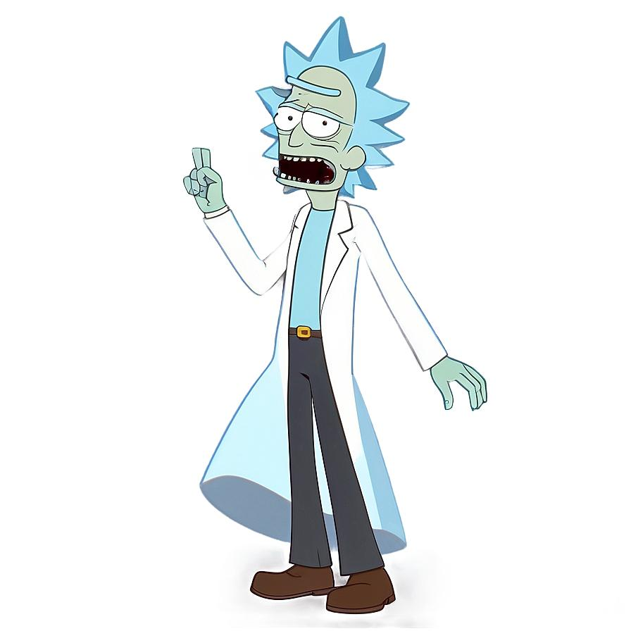

01
CIENTÍFICO
Rick Sánchez
Un científico extremadamente inteligente, excéntrico y aventurero que viaja entre diferentes dimensiones.
Rick es conocido por sus inventos tecnológicos, su portal interdimensional y su personalidad rebelde. Es el abuelo de Morty y Summer.